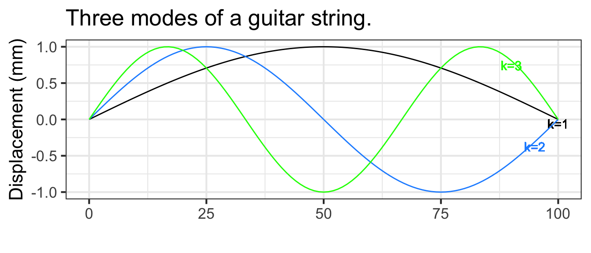
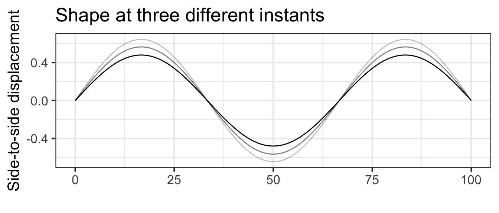
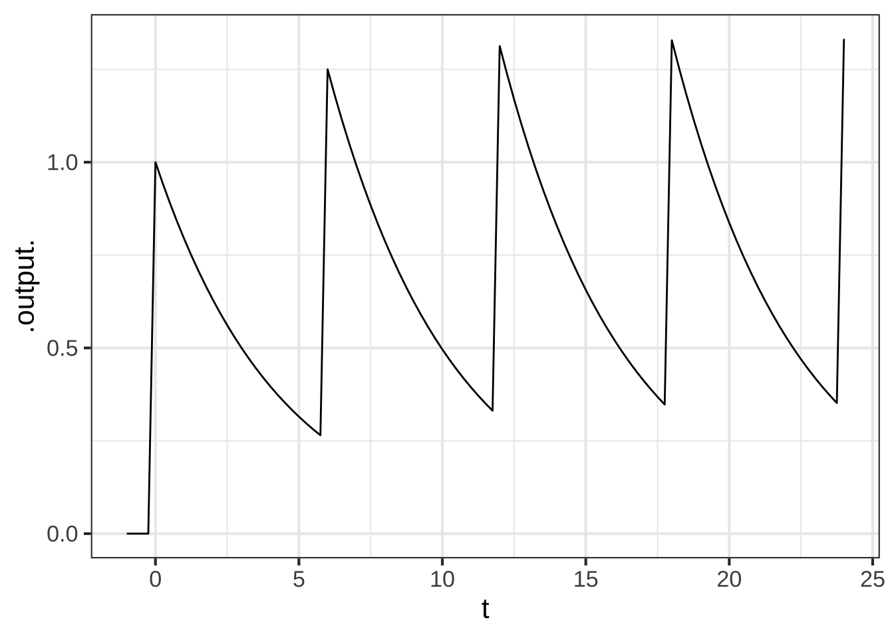

10 Functions with multiple inputs
We can use linear combination and function multiplication to build up custom functions from the basic modeling functions. Similarly, linear combination and function multiplication provide ways to construct functions of multiple inputs.
10.1 Linear combinations
Housing prices are determined by several (or many!) factors. Translating the previous sentence into the language of functions, we can say that the price is a function of multiple inputs. Plausible inputs to the function include the amount of living area and the number of bedrooms and bathrooms. The inputs may also include quality of the neighborhood, length of commute, and so on.
Often, the starting point for building a function with multiple inputs is a data frame whose variables include the function output (price) and the inputs to the function. Modelers often begin by constructing a function that is a linear combination of the input variables. To demonstrate what such functions look like, we can use the SaratogaHouses dataset, which records the sales price of 1728 houses in Saratoga County, New York, USA and 15 other variables for each house, such as livingArea and the number of bedrooms and bathrooms.
The techniques for constructing functions from data will be introduced in Block III. For now, let’s simply see what such functions look like. From SaratogaHouses we constructed this function:
SaratogaHouses data using a method called linear regression. The “linear” in the name refers to “linear combination.”\[\begin{eqnarray} \mathtt{price}(\mathtt{livingArea}, &&\mathtt{bedrooms}, \mathtt{bathrooms}) \equiv \\ &&21000 + 105\, \mathtt{livingArea}\\ &&- 13000\,\mathtt{bedrooms}\\ &&+ 26000\, \mathtt{bathrooms} \end{eqnarray}\]
The model function is a simple linear combination, but it effectively quantifies how different aspects of a house contribute to its sales price. The model (which is based on data from two decades ago) indicates that an additional square foot of living area is worth about 105 dollars per foot2. An extra bathroom is worth about $25,000. Bedrooms, strangely, are assigned a negative value by the model.
Possibly you already understand what is meant by “an additional square foot” or “an extra bathroom.” These ideas can be intuitive, but they can be best understood with a grounding in calculus, which we turn to in Block II. For instance, the negative scalar on bedrooms will make sense when you understand “partial derivatives,” the subject of Chapter Chapter 25.
10.2 f(x) times g(t)
When a guitar string is at rest it forms a straight line connecting its two fixed ends: one set by finger pressure along the neck of the guitar and the other at the bridge near the center of the guitar body. When a guitar string is plucked, its oscillations follow a sinusoid pattern of displacement. With the right camera and lighting setup, we can see these oscillations in action:
For a string of length \(L\), the string displacement is a function of position \(x\) along the string and is a linear combination of functions of the form \[g_k(x) \equiv \sin(k \pi x /L)\] where \(k\) is an integer. A few of these functions are graphed in Figure 10.1 with \(k=1\), \(k=2\), and \(k=3\).


Shapes of the sort in Figure 10.1 are a stop-motion flash snapshot of the string. The string’s shape also changes in time, so the string’s displacement is a function of both \(x\) and \(t\). The displacement itself is a sinusoid whose time period depends on the length and tension of the string as well as the number of cycles of the spatial sine: \[g_k(x, t) \equiv \sin(\frac{k \pi}{L} x) \ \sin(\frac{k \pi}{P}t)\] Figure 10.2 shows a few snapshots of the 1.5 cycle string at different moments in time, and the motion of the linear combination.

10.3 Constructing your own from data
Even if you don’t yet have a theoretical understanding of how to construct functions with multiple inputs from data, you can R/mosaic operations for doing so. A key function is fitModel(), which like makeFun(), constructs a function. And, like makeFun(), you need to use a tilde expression to specify the model formula. But, unlike makeFun(), you can leave it to the computer to find the parameters that will make the function align with data.
To illustrate, we can construct a housing-price model from the SaratogaHouses data:
price <- fitModel(price ~ A + B*livingArea + C*bedrooms + D*bathrooms,
data = SaratogaHouses)price() function to inputs, we are using the names of the inputs explicitly. To write the command price(2000,3,2) risks mixing up which input is which.Use the function in the ordinary way. For instance, here is what the model has to say about the anticipated sales price of a house with 2000 square feet of living area, three bedrooms, and two bathrooms.
price(livingArea=2000, bedrooms=3, bathrooms=2)
## [1] 242448.1The units of the output are the same as the units of price in the SaratogaHouses data frame: dollars.
To look at a function, give the function name without parentheses, e.g. price. In contrast, you will always use parentheses when applying the function to inputs.
For technical reasons, the functions created by fitModel() have a lot of computer-programming jargon in them, as you can see by constructing the model itself and then looking at the function. But you will also see the values of the parameters found by fitModel().
10.4 Exercises
Exercise 10.01
Many printed tables are meant to be used as functions; you plug in the input values and read off the output. Here’s a table published by the National Oceanic and Atmospheric Administration for the heat index, a way of summarizing the perceived comfort (or discomfort) of summer-like weather conditions.
## Warning in normalizePath("www/heat-index.png"): path[1]="www/heat-index.png":
## No such file or directory
**Part A** What are the inputs to the heat-index function - temperature and relative humidity
- temperature and wind speed
- temperature, latitude, and longitude
The table shows three different functions:
- The heat index in \(^\circ\) F.
- The heat index in \(^\circ\) C.
- A caution warning level.
**Part B** For inputs of 70% relative humidity and $88^{\circ}$ F, what are the outputs of the three functions? - \(100^{\circ}\) F, \(38^\circ\) C, and “extreme caution”.
- \(100^\circ\) F, \(38^\circ\) C, and “danger”.
- \(100^\circ\) F, \(33^\circ\) C, and “extreme caution”.
**Part C** Holding the relative humidity at 70%, how much would the ambient temperature have to increase (from $88^\circ$ F) to change the caution-level output to "dangerous"? - Increase by \(2^\circ\) F
- Increase by \(6^\circ\) F
- Increase relative humidity to 80%.
**Part D** From a starting point of $88^\circ$ F and 70% humidity, what is the slope of the increase in heat index when moving to 80% humidity. - \(6^\circ\) F per 10 percentage points humidity
- \(6^\circ\) F
- \(6^\circ\) F per 80% humidity.
**Part E** What is the heat-index output when the inputs are 52% relative humidity and $91^\circ$ F? Choose the best answer. - \(98.4^\circ\) F
- \(101^\circ\) F
- The table does not say.
**Part F** True or false: The caution-level output could have been presented as a function of just one input, rather than needing both temperature and humidity. TRUE FALSE
Exercise 10.02
Recall the Pythagorean theorem: \(C^2 = A^2 + B^2\). Let’s write this as a function that takes as inputs the lengths of the two legs and produces as output the length of the hypotenuse.
\[\text{hypotenuse}(a, b) \equiv \sqrt{\strut a^2 + b^2}\]
This can be seen as a composition of a function \(f(x) \equiv \sqrt{x}\) into a linear combination of square functions of different inputs: \(g(a, b) \equiv a^2 + b^2\).
**Part A** What is the function $f()$? - \(f(x) \equiv a^2\)
- \(f(x) \equiv \sqrt{x}\)
- \(f(x) \equiv x^2\)
- \(f(x) \equiv +\)
**Part B** What is the function $g()$? - \(g(x) \equiv a^2\)
- \(g(a) \equiv x^2\)
- \(g(x) \equiv x^2\)
- \(g(x) \equiv a^2 + b^2\)
**Part C** There are two functions in the linear combination. What are they? \(g(a)\) and \(g(b)\) \(f(x)\) and \(g(x)\) \(f(b)\) and \(g(b)\)
**Part D** What are the scalars in the linear combination? - \(1\) and \(1\)
- \(1\) and \(-1\)
- There are no scalars.
Exercise 10.03
If you are unlucky and develop a serious ear or throat or other infection, and if the infection is bacterial and not viral, you may be prescribed antibiotics. You probably know how it goes. You go to the pharmacy to pick up a bottle of pills. There might be anywhere between 10 pills and 40. The directions will certainly tell you to make sure to finish the bottle; to take the full course of medication. It may say take a pill twice a day, or three times, or every six hours, perhaps with food.
The details of this regimen are determined largely by the details of whether food inhibits or buffers absorption of the medicine and by the efficiency by which your body metabolizes the medicine and then removes it from your blood via your liver.
Modeling this process—often called the *pharmacokinetics of the drug—is an important step in drug development. A simple but effective model of the drug concentration over time is a piecewise function: zero before you take the pill, then an exponential decay from an initial level of one unit after you take the pill.
pill <- makeFun(ifelse(t < 0, 0, exp(-k * t)) ~ t, k = log(2)/1.5)The shape of the pill() function is seen in Figure 10.3. Another part of the model is the therapeutic threshold, the minimal concentration for medical effectiveness. Keep in mind that this is a model. In reality, the drug not is absorbed instantaneously as in the model, and the medical effectiveness varies smoothly with concentration rather than being an all-or-nothing affair.
slice_plot(pill(t) ~ t, bounds(t=-2:10)) %>%
gf_hline(yintercept = ~ 0.25, color="magenta") %>%
gf_text(0.25 ~ 8, label="Therapeutic threshold", color="magenta",
vjust=0, nudge_y=0.02) %>%
gf_labs(y="Drug availability", x = "Time (hrs)")The critical features of the model are the half-life of the drug in the body and the therapeutic threshold, both of which depend on the particular drug in question.
**Part A** What is the half life of the drug depicted in the Figure @fig-pharma1? 60 minutes 90 minutes 120 minutes 180 minutes
Figure 10.3 shows the availability from a single pill. The goal of taking multiple pills, spread out over time, is to keep the drug availability above the therapeutic threshold for an extended time, e.g. 10 days. There are three parameters to the therapy: how often you take a pill, and the dose delivered by a single pill, and the medicine’s half-life.
**Part B** Occasionally, the prescription directs you to take a single pill once a day. Suppose the half-life of the medicine is 3 hours. How big would the dose `A` need to be to keep the availability above a threshold of 0.25 for a 24-hour period? 2 units 16 units 64 units 1024 units
Let’s explore a familiar-sounding directive: Take one pill every six hours. We can model this by a linear combination of time-shifted pill() functions. Each pill provides a dose of size A.
six_hours <-
makeFun(A*pill(t, k) + A*pill(t-6, k) +
A*pill(t-12, k) + A*pill(t-18, k) +
A*pill(t-24, k) ~ t,
k=log(2)/3, A = 1)
slice_plot(six_hours(t) ~ t, bounds(t=-1:24))
The graph shows that the drug is above the therapeutic threshold (0.25) for the entire first day.
From the graph of drug availability versus time, do you think continuing the one-pill-every-6-hours regimen will continue to keep the drug level over the therapeutic threshold for the remainder of the course of treatment? Explain why or why not.
Let’s switch to an one-pill every 8 hour regimen, the pills being taken at midnight, 8am, and 4pm, …
How big a dose
Awill be needed to keep the drug availability above the therapeutic threshold for the entire course of treatment? (Hint: Construct a function analogous tosix_hours()and plot out the drug availability over the 24 hours of the first day. Then vary the doseAuntil you find the minimum dose that keeps the availability over the threshold of 0.25 for the entire day.)
Suppose the instructions were to take 2 pills when you start treatment and then an additional pill every 8 hours. How big a dose
Awould be needed to keep the drug availability above the therapeutic threshold for the entire course of treatment?
Which of the three regimens described (6-hour, 8-hour, 8-hour-double-first-dose) involves the smallest total dose? (The total dose is the sum of the doses for each pill administration.)